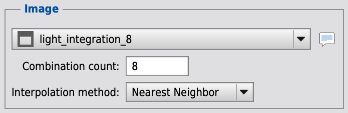
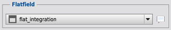
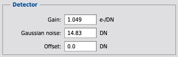
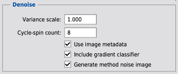

1 Description
[hide]
MureDenoise denoises linear monochannel images corrupted by mixed Poisson-Gaussian noise. MureDenoise is applicable to single frame images and average combinations of equally exposed and registered frames.
The script supports an astronomical image processing workflow in which the denoising step occurs immediately after the calibration and optional average combination steps and prior to other linear or nonlinear processing steps.
The script applies a Haar-wavelet mixed noise unbiased risk estimator (MURE) to find a denoised output image that minimizes an estimate of the oracle mean-squared error (MSE) between the denoised output image and the unknown noise-free image.[4][3]
Note: For linear multichannel images from monocolor detectors, run the monochannel denoiser on each channel separately. The script does not work properly for images from one shot color (OSC) detectors.
Warning: The script is adapted to denoise linear monochannel images mainly corrupted by shot noise, read noise, and dark current noise which is typically the case for astronomical data. The script does not work properly for other noise distributions, for saturated images, for debayered images, for upsampled or downsampled images, for linearly or nonlinearly processed images, for median combinations, or for drizzle combinations.
Warning: Do not combine denoised images. Signal-to-noise ratio (SNR) will be enhanced by combining noisy images and denoising the result. Combined images must be equally exposed, have the same pixel resolution, and be registered by projective transformation with no distortion correction.
This document describes MureDenoise Version 1.27.
1.1 Mixed Poisson-Gaussian noise hypothesis
The mixed Poisson-Gaussian noise hypothesis used by MureDenoise is defined as y ~ νΡ(αηx/ν)/(αη) + Ν(δ, νσ2/η), where
- y: noisy input image (DN),
- x: unknown noise-free image (DN),
- α: detector gain (e-/DN),
- δ: detector offset (DN),
- σ: standard deviation of detector additive white Gaussian noise (DN),
- η: combination count, and
- ν: variance scale.
νΡ(αηx/ν)/(αη) is a Poisson distribution with expectation x, variance νx/(αη), and identity covariance.
Ν(δ, νσ2/η) is a Gaussian distribution with expectation δ, variance νσ2/η, and identity covariance.
η equals the combination count of the image or 1 for single frame images.
Variance scale ν equals the product of a user specified variance scale parameter and the combination variance scaling function discussed in the Correlation hypothesis section.
The expectation ξ{y} and variance υ{y} of the noisy input image y as a function of the unknown noise-free image x are given by
- ξ{y} = x + δ and
- υ{y} = (ν/η)(x/α + σ2).
1.2 Correlation hypothesis
The denoising method employs a correlation hypothesis to partially compensate for the correlation introduced by image registration. Registration results in correlation between pixels within the interpolation filter's region of support which reduces the variance of a registered image. The correlation hypothesis models the Haar-wavelet correlation structure to improve output quality.
The first component of the correlation hypothesis is the variance scaling function S(κ, ι) that defines the average scaling of variance at wavelet scale κ that results from an application of interpolation method ι. Figures 1 shows an estimate of S(κ, ι) for the supported interpolation methods. Variance scaling values approach 1 at increasing scales due to the locality of the correlation. The variance scaling function was estimated by numerical integration over the unit pixel domain on a set of pseudorandom variates from the Gaussian distribution.
The second component of the correlation hypothesis is the combination variance scaling function C(κ, ι, η) that estimates the ratio of the normalized variance of the average combination of η images registered with interpolation method ι to the normalized variance of an average combination of η unregistered images at scale κ. C(κ, ι, η) is defined as (1 + (η - 1) S(κ, ι)) / η. The numerator represents the variance sum of one unregistered reference image with unit variance and η - 1 registered images each with S(κ, ι) variance. The denominator represents the variance sum of η unregistered images each with unit variance.
1.3 Denoising method
The denoising method is based on a statistical estimate of the oracle mean square error (MSE) between the unknown noise-free image and the denoised output image. Given a mixed Poisson-Gaussian noise hypothesis, the denoising method minimizes the MSE estimate over a set of denoising processes to find the optimal one, in the sense of peak-signal-to-noise ratio (PSNR).[4][3]
The denoising processes are expressed as a linear combination of thresholding functions, from which only the weights are unknown. These weights are computed by a solution to a linear system of equations. This implies that all parameters of the method are determined automatically, without requiring user input.
The denoising method applies MSE minimization independently at each scale of an unnormalized Haar-wavelet decomposition that preserves hypothesis noise statistics across scales. This independent MSE minimization at each wavelet scale is equivalent to a global image-domain MSE minimization, thanks to the orthogonality of Haar wavelets. The thresholding functions involve several parameters, which provides more adaptability than the standard single-parameter thresholding functions. In particular, the thresholds are adapted to local estimates of the signal-dependent noise variance, which are derived from the corresponding coarse coefficients at the same scale. The coarse coefficients are also used to incorporate interscale relationships into the thresholding functions.
The denoising method uses cycle-spinning to suppress visual artifacts due to the lack of translation invariance of the decimated wavelet decomposition.[1][2] For a range of translations or shifts, cycle-spinning shifts the noisy image, denoises the shifted image, and then unshifts the denoised image. The result so produced are averaged together to form the output denoised image, which is nearly translation invariant.
The denoising method provides an option to compensate for large scale noise variance scaling due to flatfielding. Large scale noise scaling variations, resulting from the flatfield correction of optical vignettes and detector sensitivity variations, are estimating by smoothing the flatfield. The denoising method compensates for these variations by multiplying the noisy image by the smoothed flatfield, denoising the product, and then dividing the result by the smoothed flatfield to form the output denoised image.
1.4 Single frame image denoising
Figure 2 shows parameters for denoising a 40 minute single frame exposure of the ionized hydrogen region Sharpless Sh2-202 obtained with a Takahashi FSQ-106EDX 106 mm f/5 refractor, a monochrome Kodak KAF-8300 detector binned 2x2, and an Astrodon 3 nm H-alpha filter.
The combination count parameter is set to 1 to specify that the image is a single frame exposure.
The flatfield view is set to the image used for flatfield calibration to enable large scale flatfield compensation.
Flatfield compensation is useful for telescopes with more than ~10% optical vignetting. For telescopes with less vignetting, flatfield compensation results in negligible output quality improvement.
The detector gain parameter is set to a value obtained from camera manufacture data provide by the EGAIN FITS file keyword. If detector gain is unknown, the MureDenoiseDetectorSettings script can provide an estimate.
The standard deviation of detector additive white Gaussian noise parameter is set to an estimate of the quadrature sum of read noise and dark current noise in a 40 minute dark provided by the MureDenoiseDetectorSettings script. Detector offset is set to 0 because the image is dark-subtracted.
The variance scale parameter is set to one to indicate that the nominal amount of denoising be performed. A value less than one will reduce the amount of denoising. A value greater than one will increase the amount of denoising.
Warning: Excessively large variance scale values risk the generation of denoising artifacts and the loss of signal-to-noise ratio (SNR). Denoising artifacts typically take on a “checkerboard” pattern, visible with high stretch in the background areas of the denoised image.
The cycle-spin count parameter provides an adjustable tradeoff between output quality and processing time. The default cycle-spin count of 8 typically provides very good quality results in reasonable time. With this default, denoising a 4K x 4K pixel image requires several minutes of time on a late 2015 processor and a single-threaded PixInsight PJSR platform.
Figure 3 shows a crop of the noisy and denoised single frame images with nonlinear stretch in a stack from which only one is visible at a time for efficient image comparison.
1.5 Average combination image denoising
Figure 4 shows parameters for denoising an average combination of 8 registered frames of Sharpless Sh2-202, each a 40 minute exposure obtained in similar observing conditions with the same equipment.
The combination count parameter is set to 8 to specify that the image is an 8 frame average combination.
The interpolation method parameter is set to the Nearest Neighbor method that was used by the StarAlignment process to register the frames. Interpolation method must be set equal to the StarAlignment process parameter Interpolation > Pixel interpolation.
The remaining parameters are identical to those shown in Figure 2.
Figures 5 and 6 show a crop of the noisy and denoised average combination images with nonlinear stretch in a stack for efficient image comparison. The differences are hard to see in Figure 5 at actual size. Figure 6 shows a crop of the same images at a 2x zoom where the differences are more apparent.
1.6 Method noise
MureDenoise provides an option to generate the method noise image. Method noise is the noise guessed by the denoising method, defined as the difference between the noisy input and the denoised output. Method noise should track hypothesis noise statistics, and is strongly signal dependent due to the presence of Poisson noise.
Figure 7 shows crops of a denoised combination and the corresponding method noise image in a stack for efficient image comparison, the latter shown with linear stretch. Signal dependent method noise variations are clearly visible, however image structures unrelated to noise are small.
2 Usage
[hide]
2.1 MureDenoise
2.1.1 Image
-
View
-
The view of the linear monochannel image selected for denoising. The image must be a single frame image or an average combination of similarly exposed and registered frames. The size of the image must be at least 256 pixels in width and height.
Note: For linear multichannel images from monocolor detectors, run the monochannel denoiser on each channel separately. The script does not work properly for images from one shot color (OSC) detectors.
Warning: The script is adapted to denoise linear monochannel images mainly corrupted by shot noise, read noise, and dark current noise which is typically the case for astronomical data. The script does not work properly for other noise distributions, for saturated images, for debayered images, for upsampled or downsampled images, for linearly or nonlinearly processed images, for median combinations, or for drizzle combinations.
Warning: Do not combine denoised images. Signal-to-noise ratio (SNR) will be enhanced by combining noisy images and denoising the result. Combined images must be equally exposed, have the same pixel resolution, and be registered by projective transformation with no distortion correction.
-
Combination count
-
The combination count of the image.
Combination count must be set to 1 for single frame images.
Combination count must be set to η for average combinations of η equally exposed and registered frames.
-
Interpolation method
-
The interpolation method used to register images for combination, as defined by the StarAlignment process.
Interpolation method must be set equal to the StarAlignment process parameter Interpolation > Pixel interpolation. When Auto was selected as the StarAlignment pixel interpolation parameter, interpolation method must be set equal to the value recorded in the StarAlignment process log.
The script supports the following interpolation methods:
- Nearest Neighbor
- Bilinear
- Bicubic Spline
- Lanczos-3
- Lanczos-4
- Lanczos-5
2.1.2 Flatfield
-
View
-
To enable large scale flatfield compensation, the main view of the monochannel image used for flatfield calibration. The flatfield must be bias or dark-subtracted. Pedestal must be zero. To disable flatfield compensation, do not select a view.
The sizes of the main view of the image selected for denoising and the main view of the flatfield must be equal.
The standard deviation of the smoothed flatfield is written to the process console as the Flatfield scale value. The value is normalized as a percentage of the mean of the smoothed flatfield.
2.1.3 Detector
-
Gain
-
The gain of the detector in e-/DN.
If detector gain is unknown, the MureDenoiseDetectorSettings script can provide an estimate.
Manufacture detector specifications may provide a gain value in e-/DN. This value may be used, with the risk that it may not correspond well to the actual detector configuration and performance. In general, the MureDenoiseDetectorSettings script estimate is more reliable.
-
Gaussian noise
-
The standard deviation of Gaussian noise of the detector in DN.
If detector Gaussian noise is unknown, the MureDenoiseDetectorSettings script can provide an estimate.
Manufacture detector specifications may provide a read noise value in e-. This value, when divided by detector gain to obtain a value in DN, may be used, with the risk that it may not correspond well to the actual detector configuration and performance. In general, the MureDenoiseDetectorSettings script estimate is more reliable.
-
Offset
-
The offset of the detector in DN.
Detector offset must be set to 0 for a bias or dark-subtracted image, unless the image has a non-zero pedestal, in which case offset must be set equal to the pedestal.
2.1.4 Denoise
-
This parameter scales hypothesis noise variance. A value of one corresponds to nominal hypothesis noise variance and a corresponding nominal amount of denoising. A value less than one will reduce the amount of denoising. A value greater than one will increase the amount of denoising.
Warning: Excessively large variance scale values risk the generation of denoising artifacts and the loss of signal-to-noise ratio (SNR). Denoising artifacts typically take on a “checkerboard” pattern, visible with high stretch in the background areas of the denoised image.
-
Cycle-spin count
-
Cycle-spin count provides an adjustable trade-off between output quality and processing time. Increasing the number of cycle-spins improves denoising quality, but also increases (nearly linearly) processing time.
The script works at multiple resolutions. To create the coarser resolutions, the script combines pixels from finer resolutions. There are multiple ways to choose which pixels to combine. Each cycle-spin chooses different pixels to combine, and performs a complete denoising operation. The results from all of the cycle-spins are averaged together to produced the final result. The net effect is to average out the variations in noise estimation due to pixel choice, and so gives a better result.
The default cycle-spin count of 8 typically provides very good quality results in reasonable time.
-
Use image metadata
-
Use ImageIntegration generated image metadata to estimate a linear image transformation that accounts for the process's integration normalization, weighting, and output rescaling operations. Also loads Combination count.
The following ImageIntegration settings are supported: Image integration > Combination: Average. Image integration > Normalization: No normalization, Additive, or Additive with scaling. Image integration > Weights: all values.
The parameters of the linear image transformation used are logged in the process console during the denoising process.
The keyword none indicates either unavailable image metadata or unsupported ImageIntegration settings.
-
Include gradient classifier
-
Include a gradient classifier that exploits local gradient squared magnitude to local noise variance ratio relationships to provide an increase in the adaptivity and accuracy of the denoising process, but also increases processing time by about 50%.
-
Generate method noise image
-
Generate the method noise of the denoising process as a new image window. Method noise is the noise guessed by the denoising method, defined as the difference between the noisy input and the denoised output. Method noise should track hypothesis noise statistics, and is strongly signal dependent due to the presence of Poisson noise.
The standard deviation of the method noise image is written to the process console as the Method noise value in DN units. The process log will also contain an estimate of the relative contributions of Poisson noise variance and Gaussian noise variance in the 10th percentile exposure. If the Gaussian noise variance contribution is less than 10%, the image can be considered "sky background noise limited".
2.2 Button pane
-
Create a new instance.
-
Open a browser to view documentation.
-

-
Reset all parameters.
-
Denoise
-
Denoise the image.
-
Dismiss
-
Dismiss the dialog or abort the denoising.
3 Limitations and known issues
[hide]
Warning: The script is adapted to denoise linear monochannel images mainly corrupted by shot noise, read noise, and dark current noise which is typically the case for astronomical data. The script does not work properly for other noise distributions, for saturated images, for debayered images, for upsampled or downsampled images, for linearly or nonlinearly processed images, for median combinations, or for drizzle combinations.
Warning: Do not combine denoised images. Signal-to-noise ratio (SNR) will be enhanced by combining noisy images and denoising the result. Combined images must be equally exposed, have the same pixel resolution, and be registered by projective transformation with no distortion correction.
Warning: Excessively large Denoise Variance scale values risk the generation of denoising artifacts and the loss of signal-to-noise ratio (SNR). Underestimates of detector gain, overestimates of detector Gaussian noise, and underestimates of detector offset risk similar problems. Denoising artifacts typically take on a “checkerboard” pattern, visible with high stretch in the background areas of the denoised image.
Warning: Even if no denoising artifacts are visible, incorrect parameters or excessively large Denoise Variance scale values can result is loss of signal. In general, avoid the temptation to get “more” denoising by increasing the Denoise Variance scale parameter. If more denoising is needed, use a different method later during image processing.
References
[1] R. Coifman and D. Donoho, “Translation invariant de-noising”, in Lecture Notes in Statistics: Wavelets and Statistics, 103:125–150, Springer Verlag, New York, 1995.
[2] U.S. Kamilov, E. Bostan, and M. Unser, "Variational Justification of Cycle Spinning for Wavelet-Based Solutions of Inverse Problems", IEEE Signal Processing Letters, 21(11):1326-1330, November 2014.
[3] F. Luisier, "The SURE-LET Approach to Image Denoising", École polytechnique fédérale de Lausanne, Thèse N° 4566, January 2010.
[4] C. Stein, "Estimation of the Mean of a Multivariate Normal Distribution", The Annals of Statistics, 9(6):1135-1151, November 1981.
Copyright © 2012-2020 Mike Schuster. All Rights Reserved.